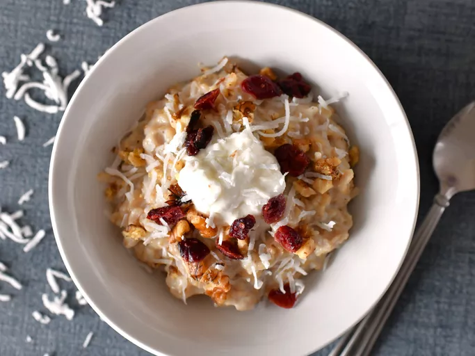

Healthy Coconut Oatmeal

Home
Description
A fast and healthy breakfast cereal or high-energy snack.
Oatmeal made with coconut, raisins, cranberries, walnuts.
Brown rice can be used in place of oatmeal.
Ingredients
- 3 ½ cups plain or vanilla soy milk
- ¼ teaspoon salt
- 2 cups rolled oats
- ¼ cup pure maple syrup
- ⅓ cup raisins
- ⅓ cup dried cranberries
- ⅓ cup sweetened flaked coconut
- ⅓ cup chopped walnuts
- 1 8oz container plain yogurt
- 3 tablespoons honey
Steps
- Pour the milk and salt into a saucepan, and bring to a boil.
- Stir in the oats, maple syrup, raisins, and cranberries.
- Return to a boil, then reduce heat to medium.
- Cook for 5 minutes.
- Stir in walnuts and coconut, and let stand until it reaches your desired thickness.
- Spoon into serving bowls, and top with yogurt and honey, if desired.